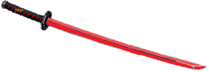
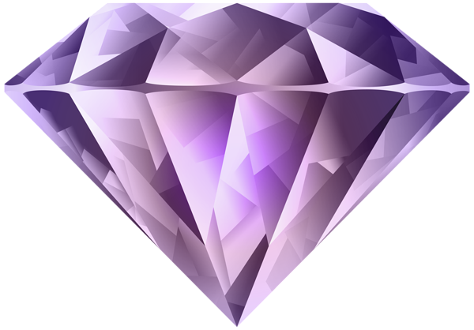
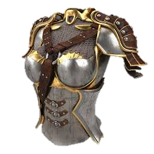
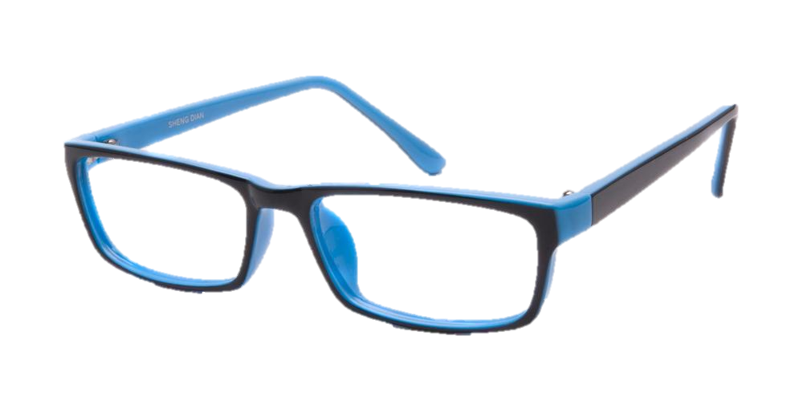

<table class="shop">
    <tr>
        <!-- I want to be able to click back and next arrows to flip between the items in the shop (at most two at a time) -->
        <td id="back" onclick="prevItems()">
            
        </td>
        <td class="item" id="item-1">
            
            <br>
            <span id="name">Sword of Buchanan</span>
            <br />
            <span id="desc">
                A <b>red</b>-tinted sword that many ruthless, arrogant men have weilded in the past.
                The hilt has gold lettering that spells the name "Tom".
                Those who handle such a sword end up swinging violently at anyone in their path no matter the consequence.
                It is a long sword with a heavy weight and a dull blade.
                In its youth, the sword was much sharper but it seems that it has lost its edge with time.
                It still maintains its red lust, hence its high price.
            </span>
            <br><br />
            <span id="cost">
                1,000,000 
            </span>
        </td>
        <td class="item" id="item-2">
            
            <br>
            <span id="name">Baker's Coins</span>
            <br />
            <span id="desc">
                A stack of 100 <b>gold</b> coins with the name "Jordan" engraved boldly on the face.
                Each coin is worth 10 gold and <u>can be used as currency in the shop</u>.
                Despite the coin's seemingly currential value, it is essentially useless
                as it is made of tin and zinc yet wrapped in very thin gold plate to give it a sparkly appearance.
                Nonetheless, it is but a gilded coin that is often used in scamming shopkeepers for their goods.
            </span>
            <br><br />
            <span id="cost" style="color: purple">
                5 
            </span>
        </td>
        <td class="item" id="item-3">
            
            <br>
            <span id="name">Fay Armor</span>
            <br />
            <span id="desc">
                A very revealing set of silvery-<b>white</b> armor for adventurous dreamers.
                Along the side of the legs is the name "Daisy" in golden embroidery.
                The last woman to have worn this armor had run through another woman with her lover's sword.
                Despite it seeming pure and angelic, this set of armor is for only the cynical and evil.
                The high price is for its ancestry in the past, for it had been forged for a wealthy warrior woman.
                Its purpose was to protect its wearer from the feelings of guilt that might plague her.
            </span>
            <br><br />
            <span id="cost" style="color: gold">
                10,000 
            </span>
        </td>
        <td class="item" id="item-4">
            
            <br>
            <span id="name">Gatsby's Heart</span>
            <br />
            <span id="desc">
                A heart-shaped container with the name "James Gatz" carved into the emerald-<b>green</b> metal of the item.
                It feels very fragile, almost like glass.
                There are already a few cracks in it from someone having sliced it with a cruel blade.
                Its previous owner was the lover of a warrior woman who killed another woman with his sword.
                Those who have weilded such an item as this heart have had high ambitions for the future
                and grown tremendously wealthy, but with great consequences.
            </span>
            <br><br />
            <span id="cost" style="color: gold">
                1,000 
            </span>
        </td>
        <td class="item" id="item-5">
            
            <br>
            <span id="name">Carraway Glasses</span>
            <br />
            <span id="desc">
                Otherwise known as the "Glasses of Truth," this pair of
                <b>blue</b> bifocals have been used for generations by the Carraway family.
                They help its wearer see the truth behind people's actions as many strange
                people will find the user trustworthy enough to divulge their secrets.
                They have ended up at this shop because the previous owner, Nick, had grown
                weary of seeing the vile truths of the world and decided
                to give up his family heritage for free. This item
                can be used to see the weaknesses of the other items, so use
                it wisely.
            </span>
            <br><br />
            <span id="cost" style="color: gold">
                500 
            </span>
        </td>
        <td class="item" id="item-6">
            
            <br>
            <span id="name">Gem Pack</span>
            <br />
            <span id="desc">
                Some gems for aspiring adventurers.
                Hurry, it's on sale!
                For limited time, purchase this pack
                of gems and get 1,000 of them, the
                <b>Sword of Buchanan</b>, and <b>Fay Armor</b>!
            </span>
            <br><br />
            <span id="cost" style="color: green">
                <span style="text-decoration: line-through;">$99.99</span>
                $49.98
            </span>
        </td>
        <td onclick="nextItems()" id="next">
            
        </td>
    </tr>
</table>